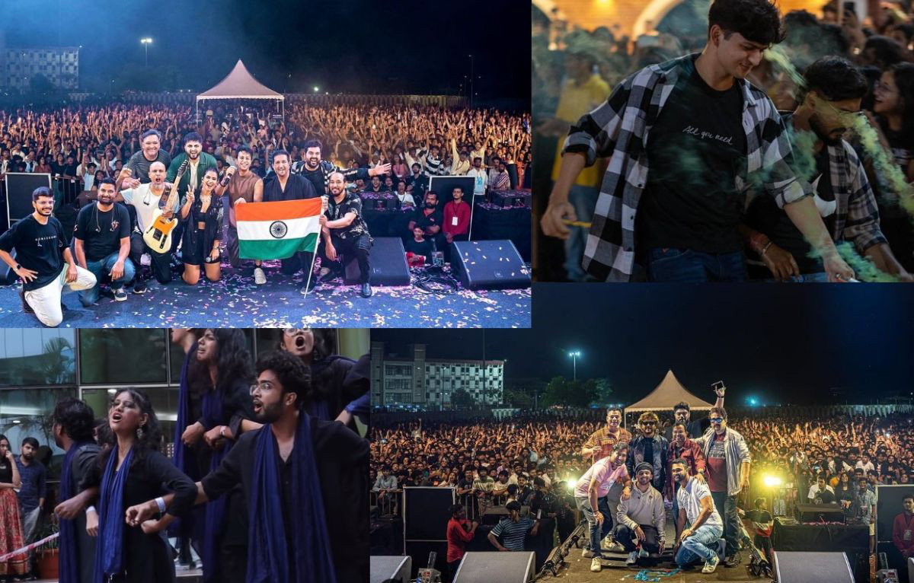
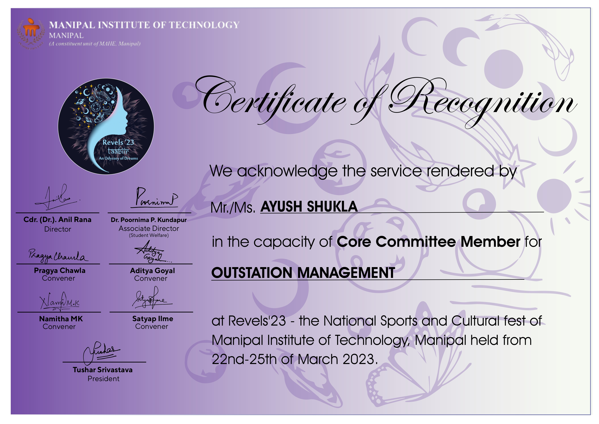
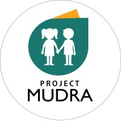

Leadership
Event Coordination
Team Management
Revels, Manipal Institute of Technology
Led external delegate coordination for Revels, the annual cultural and sports fest of Manipal Institute of Technology.
- Led a 35-member team for coordinated registration and travel support.
- Helped manage participation logistics for 3000+ students from across India.
- Received Dean’s appreciation in 2023 for contributions to the event.


Operations
Teamwork
Rugved Systems
Senior team member in Rugved Systems, a student-led project focused on autonomous defense robotics.
- Managed team budgets and recruitment activities in 2022.
- Supported team operations, planning, and coordination.
- Worked in a multidisciplinary student engineering project environment.

Volunteering
Social Outreach
Community
Project Mudra, MIT Manipal
Volunteered with Project Mudra, the social outreach club of MIT Manipal.
- Contributed to student-led social outreach activities.
- Participated in community-focused initiatives outside regular academics.
- Helped support educational and volunteering efforts through the club.
